Soru 1 (60)
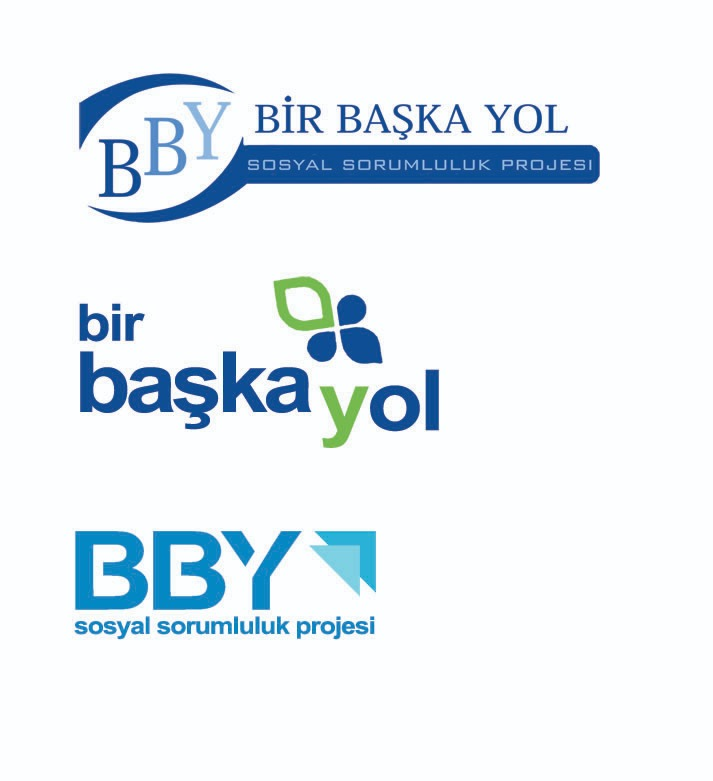
Bir Başka Yol Gönüllülük Projesi kurulduğu günden bugüne kaç gün geçmiştir?
5196
Soru 2 (150)
Aşağıdaki resimlerden hangileri gerçek hangileri photoshopludur?

Gerçek

Gerçek

Gerçek

Gerçek

Gerçek
Soru 3 (60)

Ünlü sosyal medya platformlarından biri olan Facebook’un kuruluş amacı neydi?
- Harvard öğrencileri arasında sosyalleşmek amacıyla kurulmuştur.
- Mark, eski kız arkadaşını stalklamak için kurmuştur.
- Sınavlarda öğrencilerin kendi aralarında kopya çekmeleri amacıyla kurulmuştur.
- Harvard öğrencileri arasında en güzeli ve en yakışıklıyı seçmek amacıyla kurulmuştur.
- Harvard'ın arşivini internet üzerinde depolamak için kurulmuştur.
Harvard öğrencileri arasında sosyalleşmek amacıyla kurulmuştur.
Soru 4 (60)

BBY projesini kaç gönüllü kurmuştur?
10
Soru 5 (45+45)
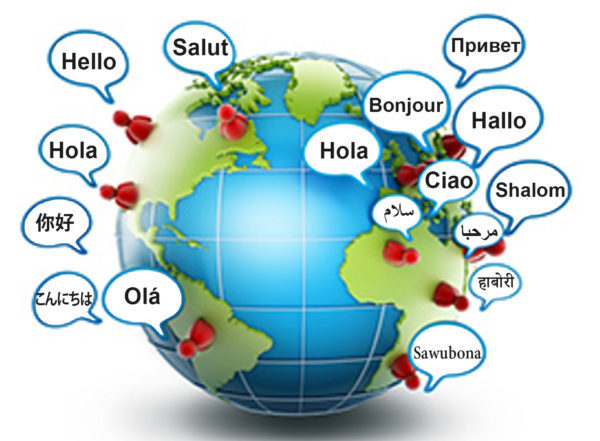
Dinlediğiniz şarkı hangi dildedir?
- Hintçe
- Japonca
- Çince
- Tayca
- Korece
Tayca
Soru 6 (150)

Yukarıdaki cümleyi anlamlı ve tutarlı kılacak bir şekilde cümledeki boşlukları doldurunuz.
1, 2, 3, 2; 1, 4, 1, 1
Soru 7 (120)
Aşağıda elektron mikroskobu ile çekilmiş görseller bulunmaktadır. Bu görsellerin hangi eşyaların fotoğrafı olduğunu tahmin edin.
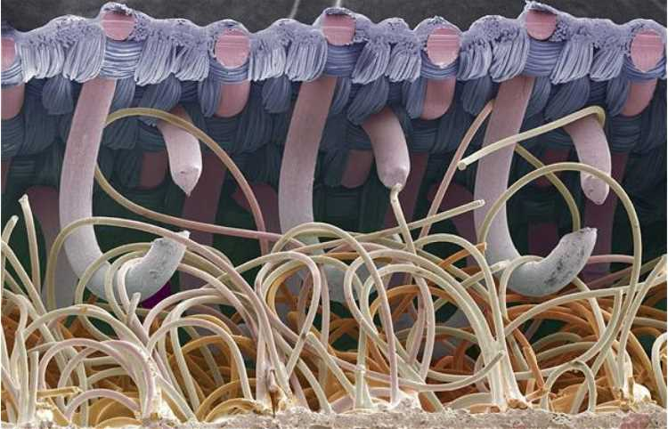
- Halı
- Perde
- Cırtcırt
- Böcek kabuğu
- Çengel
Cırtcırt
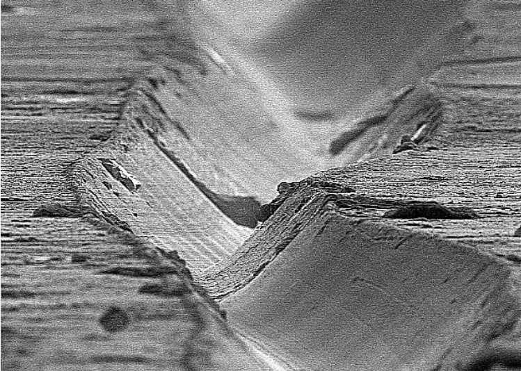
- Metal levha
- Kalemin kağıt üzerinde bıraktığı iz
- Bozuk para
- Plak
- Büyük kanyon
Plak
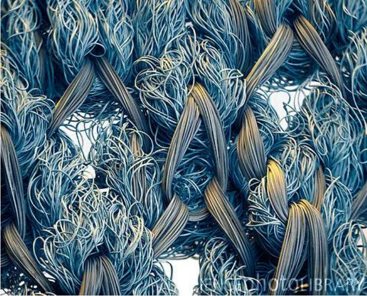
- Tişört
- Ayakkabı bağcığı
- Yün
- Saç teli
- İplik
Tişört
Soru 8 (60)

Hangi balığın iki çenesi vardır?
- Şişe Burunlu Yunus
- Büyük Beyaz Köpek Balığı
- Müren
- Manta Ray
Müren
Soru 9 (60)
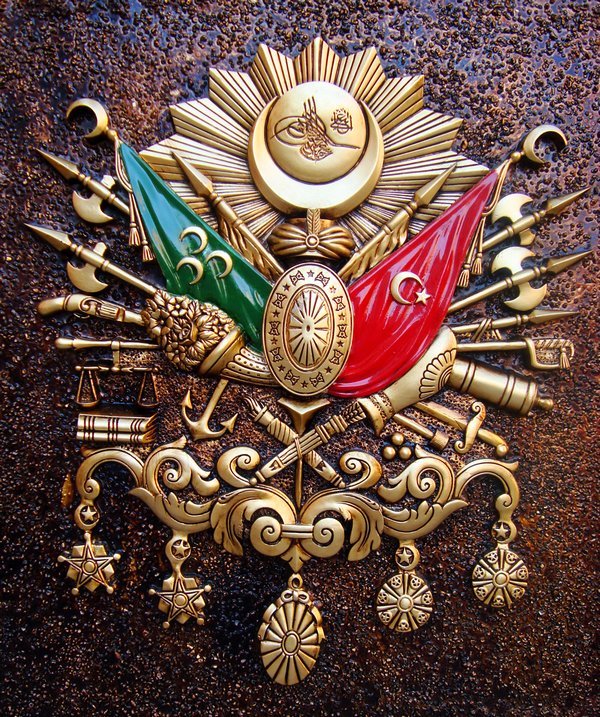
Devlet-i Aliyye-i Osmaniyye’deki ilk halife kimdir?
- Hz. Ebubekir
- Osman Bey
- Yavuz Sultan Selim
- Hz. Osman
- Fatih Sultan Mehmet
Yavuz Sultan Selim
Soru 10 (45)

BBY instagram hesabındaki tüm postlara yapılan toplam yorum sayısı kaçtır?
121
Soru 11 (45+45)
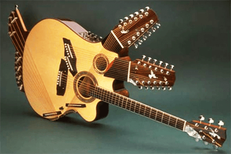
Dinlediğiniz müzik hangi enstrumana aittir?
- Org
- Cam Armonikası
- Keman
- Melodika
- Marakas
Cam Armonikası
Soru 12 (90)
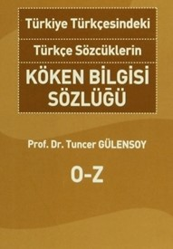
Aşağıdaki kelimelerden hangisi Türkçe'den başka bir dile, oradan da Türkçe'ye geri geçmiştir?
- Haşhaşi
- Bergamot
- Lira
- Anadolu
- Türk
Bergamot
Soru 13 (90)
Çanakkale Savaşı'nda ölen bilim insanı ve çukura düşen şair hangi şıkta sırasıyla verilmiştir.
- Erdal İnönü ve Said Faik Abasıyanık
- Leonard Euler ve Ahmet Sıtkı Tarancı
- John Thomson ve Thomas Moore
- Henry Moseley ve Orhan Veli Kanık
Henry Moseley ve Orhan Veli Kanık
Soru 14 (90)
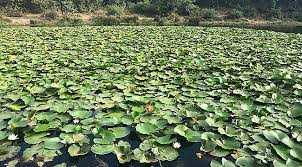
Göldeki nilüferler her yıl sayısını ikiye katlıyor. On senede gölün dörtte birini kapladığına göre, tamamını kaç senede kaplar?
12
Soru 15 (60)
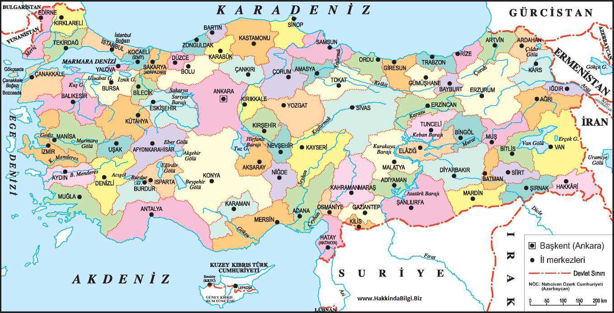
Türkiye'nin hangi komşusunun nüfusu daha fazladır?
İran
Soru 16 (150)
Aşağıdaki bilgilerden hangileri doğru, hangileri yanlıştır?
- Dünyada yaşayan tüm insanları oluşturan atomlardaki boşluklar çıkarılırsa tüm dünya nüfusu bir elmaya sığabilir.
- Bir ahtapot türü, sadece renk değiştirmekle kalmıyor, aynı zamanda dil balığı, aslan balığı ve deniz yılanı gibi hayvanların şekline de bürünebiliyor.
- Dünyadaki insanların üçte ikisi hiç kar görmedi.
- Kleopatra, mısır piramitlerinin inşa emrini vermiştir.
- Bir musluktan lavaboya dökülen su her zaman saat yönünde dönerek deliğe akar.
DDDYY
Soru 17 (60)
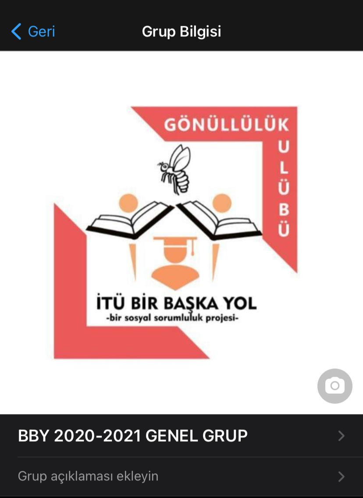
BBY whatsapp grubunda kaç gönüllü vardır?
172
Soru 18 (60+30)
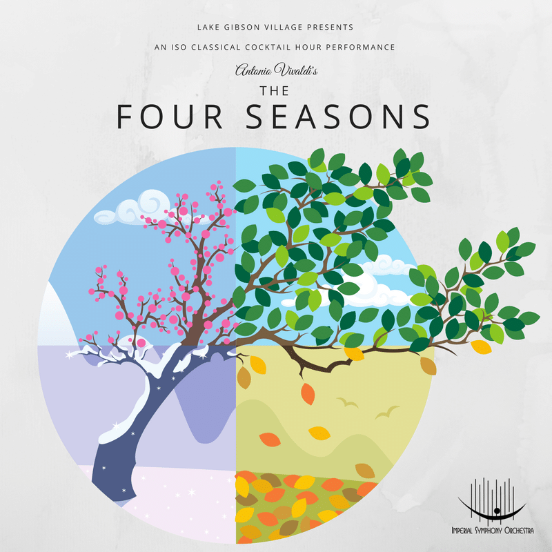
Dinlediğiniz şarkı Vivaldi'nin 4 Mevsimler kompozisyonunun hangi mevsimini temsil etmektedir?
Kış
Soru 19 (120)
Aşağıda elektron mikroskobu ile çekilmiş görseller bulunmaktadır. Bu görsellerin hangi objelerin fotoğrafı olduğunu tahmin edin.
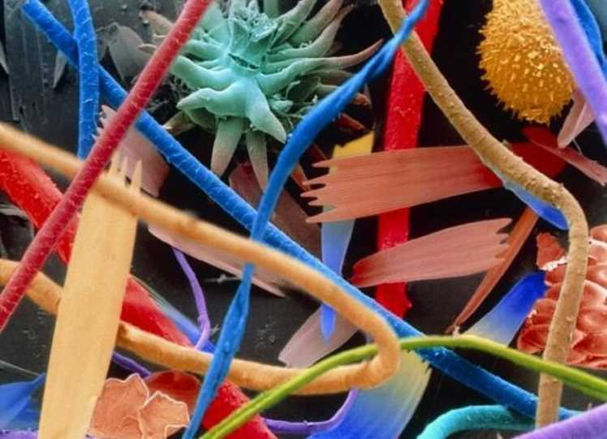
- Toz
- Spagetti
- İplik
- Vileda ucu
- Kum
Toz
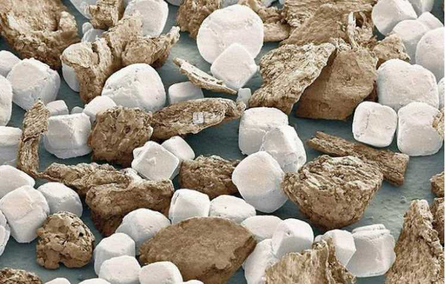
- Toz
- Tuz ve karabiber
- Ölü deri
- Çakıl taşları
- Cam parçaları
Tuz ve karabiber
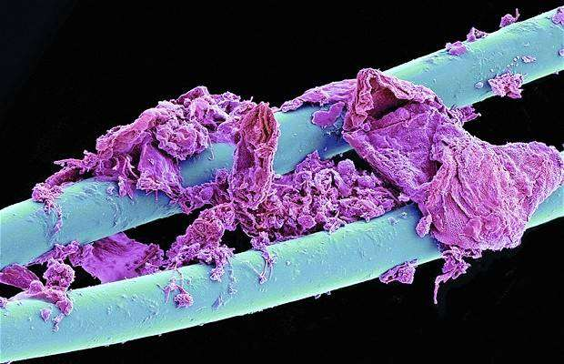
- Mavi saç
- Diş fırçası
- Diş ipi
- Misina
- Çin çubuğu
Diş ipi
Soru 20 (60)

Bu yarışmayı yaptığımız platform kaç satır koddan oluşmaktadır?
3618
Puanlama
- YKS Birincileri 78
- Ya Ben Çok Ostrogot 72
- Hiç Bilmiyorum 71
- Friends 66
- Aklımda Tek Bir Şey Var 65
- Milyonerler 59
- En Üstte Sevdenur Var 48
- Fenerbahçe Çok Yaşa 36